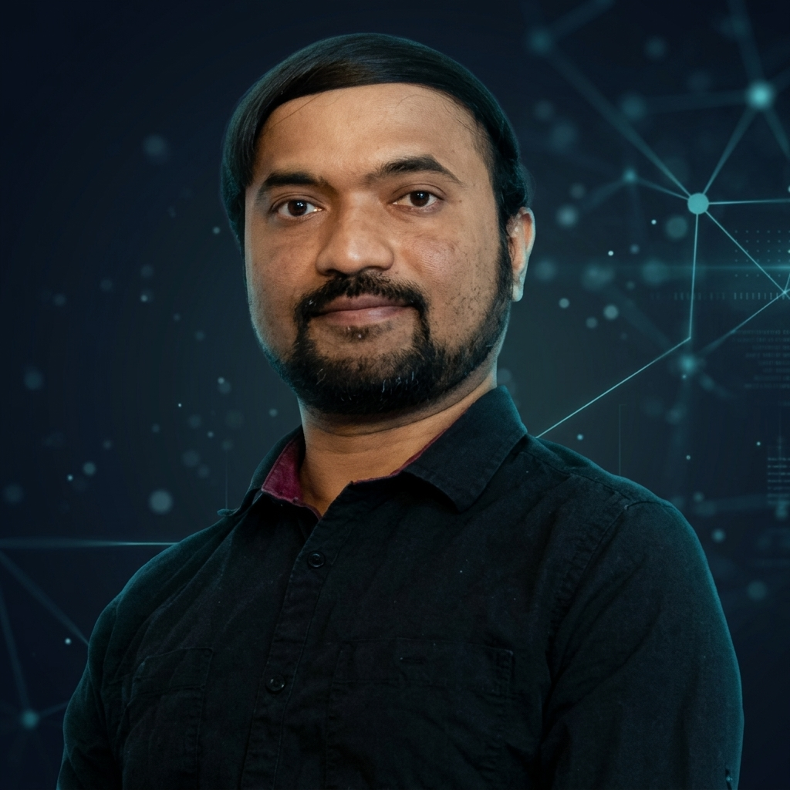

Cancer biologist and bioprocess engineer. Trained at DKFZ Heidelberg and ICT Mumbai, I move between the bioreactor and the bench, and right now I'm hunting for new targets to treat cancer.

I'm a bioprocess and biomedical engineering scientist with a PhD in Cancer Biology from the German Cancer Research Center (DKFZ) in Heidelberg. My work started with designing and optimising biological production processes for pharmaceuticals, biotechnology and renewable energy, and it now centres on finding novel vulnerabilities in cancer.
My grounding is in chemical and biopharmaceutical engineering, with depth in biochemistry, molecular biology, microbiology and mammalian cell culture. In industry I worked across upstream and downstream biomanufacturing, from pilot- and process-scale bioreactors to tangential flow filtration and chromatography, in a GMP environment.
I enjoy working in teams of scientists, technologists and engineers to untangle hard problems. Whether it is a new drug, a cleaner biofuel process or a target nobody has looked at yet, I want my work to leave a positive mark. If you have a project in biopharma, bioprocessing or cancer research, I'd love to hear about it.
Applying a decade of engineering and molecular biology to find new therapeutic vulnerabilities in cancer.
Mouse models (FELASA certified), animal permits, hydrodynamic tail-vein injection, and collaborative work published in Nature, Science Translational Medicine, Nature Cell Biology and Nature Aging.
First step into cancer research.
Developed clones for therapeutic protein production, and ran their overexpression and purification at scale.
Fused the accessory protein expansin to cellulase and laccase by overlap-extension PCR to boost substrate binding and catalysis. Isolated thermophilic cellulolytic microbes using 16S rRNA sequencing. Qualified GATE.
Expressed and characterised a thermostable, glucose-tolerant β-glucosidase from Methylococcus capsulatus, which became my first paper.
Summer internship in API manufacturing and analysis. Qualified GPAT; Gunvati J Kapoor Merit-cum-Means Scholar.
Away from the lab I photograph and film wildlife, mostly along the Neckar. Getting one good shot means mixing optics, technique, patience and a bit of art, which is a feast for an engineer-cum-artist mind. Manual mode, composition and RAW processing are my current obsessions.
Collaborations in cancer research, biopharma or bioprocess engineering, or just a good wildlife spot. My inbox is open.